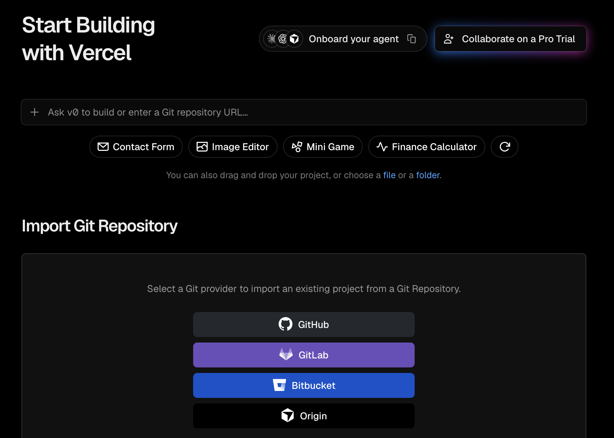
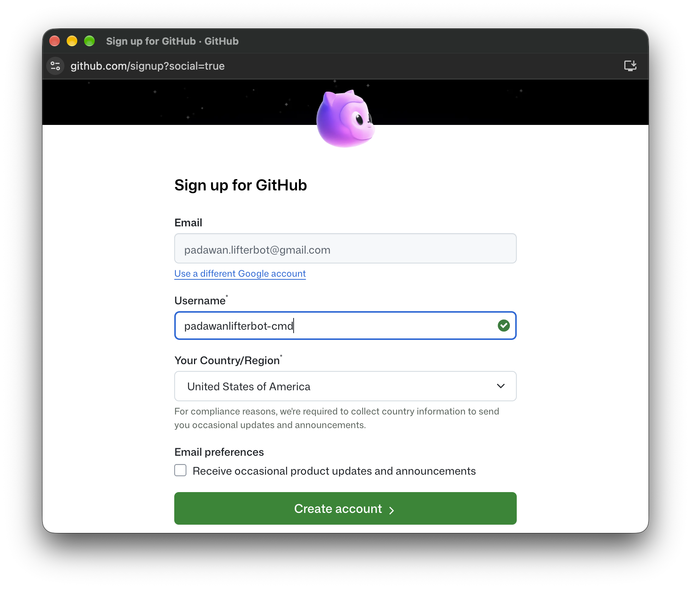

Get the MAC
Connect the board to your laptop, then ask opencode to print its MAC address. It is six pairs, like 24:6f:28:1a:2b:3c.

Class 10 · Week 10 · Fall 2026
Build a weather station that reads the room, posts to the internet every ten seconds, and turns on an LED when the page says so.

Today
Read the room, post the number, see it on a page.
Then let the page switch an LED.
Act 1 · Read the room · 1 of 2
The Tufts network expects every device to sign in. A board with no browser cannot, so IT registers its MAC address by hand.
Open this on your laptop, not the board
access.tufts.edu/manual-non-browser-device-registration
It can take a few minutes to take effect.
Connect the board to your laptop, then ask opencode to print its MAC address. It is six pairs, like 24:6f:28:1a:2b:3c.
Paste the address into the form, give the device your name, and submit.
Now wlan.connect() can join the network, and the board gets an address.
Act 1 · Read the room · 2 of 2
Before any cloud, prove the whole chain on your own network: sensor, Wi-Fi, HTTP, browser.
The prompt
I have an ESP32 with MicroPython and a DHT22 sensor. I want to read the current temperature and humidity via an API on the device. Connect the ESP32 to the open Tufts_Wireless network. Serve it at GET /device/readings.
Ask opencode for the board's address, then open /device/readings on it. One device, one reading, no cloud yet.
# after wlan.connect(...), answer GET /device/readings s = socket.socket() s.bind(("", 80)) s.listen(1) while True: conn, _ = s.accept() sensor.measure() body = '{"temperature": %.1f, "humidity": %.1f}' % ( sensor.temperature(), sensor.humidity()) conn.send("HTTP/1.1 200 OK\r\n") conn.send("Content-Type: application/json\r\n\r\n") conn.send(body) conn.close()
Act 2 · Show it · 1 of 6
Sign up first. The import panel is where the GitHub button lives.
Sign up at vercel.com and choose the Hobby plan. It is free.
It opens GitHub's sign-up, which is step 2.
The repository does not exist until step 2. The panel will be empty.

Act 2 · Show it · 2 of 6
The button opens this form. One GitHub account holds every project this term.
Email, a username, your country. Then Create account.
If GitHub asks, click the link it sends before you try to push.
A new, empty my-weather-station. Then back in Vercel: pick it, Deploy.

Vercel builds it and gives you your-app.vercel.app. Every push to the repository rebuilds it.
Act 2 · Show it · 4 of 6
The app creates both on its first request. Nobody opens a SQL console.
create table if not exists readings ( id bigserial primary key, station text not null, temperature real not null, humidity real, taken_at timestamptz default now() ); create table if not exists settings ( id int primary key default 1, threshold_c real not null default 24 );
One row per POST, with its own timestamp. Never update a row; add another.
One row, id 1. The threshold lives here, so the board and the page read the same number.
if not exists makes the first request create the tables and every later one a no-op.
The store comes from the Vercel Marketplace: vercel.com/marketplace/neon, then Install and Create New Neon Account. The free plan is enough.
Act 2 · Show it · 5 of 6
Two tables and two routes. Everything else on the page is drawing.
The prompt
Create a Next.js app on Vercel with a Postgres database. Create the tables if they do not exist on first request. Two tables: readings (id, station, temperature, humidity, taken_at) and settings (a single row, threshold_c default 24). Two API routes: POST /cloud/history inserts a reading and returns {"ok": true, "threshold_c": the current threshold}; GET /cloud/history returns the newest readings with their timestamps, plus threshold_c.
POST /cloud/history {"station": "medford-01", "temperature": 21.4, "humidity": 48} 200 OK {"ok": true, "threshold_c": 24}
GET /cloud/history {"readings": [ {"timestamp": "2026-11-12T14:03:11Z", "temperature": 21.4, "humidity": 48}, …], "threshold_c": 24}
Read the reply to the board's POST as carefully as the page's GET. The threshold in it is what turns the LED on.
Act 2 · Show it · 6 of 6
Same shape as any API call: an address, a JSON body, a status code back.
The prompt
Connect the board to Wi-Fi and, every ten seconds, POST the reading to https://your-app.vercel.app/cloud/history as JSON: {"station": "medford-01", "temperature": ..., "humidity": ...}. Send Content-Type: application/json. Print the status code and the body, then close the response. If a request fails, keep going and try again in ten seconds.
Close every response. The board has about 8 MB of RAM, and a leaked response eats it in a few hours.
import ujson, urequests URL = "https://your-app.vercel.app/cloud/history" HEADERS = {"Content-Type": "application/json"} while True: sensor.measure() body = {"station": "medford-01", "temperature": sensor.temperature(), "humidity": sensor.humidity()} r = urequests.post(URL, data=ujson.dumps(body), headers=HEADERS) print(r.status_code, r.text) r.close() time.sleep(10)
The server was the test rig. From here the board pushes, and your page is the console.
Act 2 · Show it · 6 of 6
Fetch the route, draw the numbers, and do it again five seconds later.
The prompt
Build a page that fetches /cloud/history every five seconds with cache: "no-store", shows the newest reading large with humidity and the time underneath, and draws the rest as a chart. If the fetch fails, keep the last number on screen and show a small "offline" note.
Serverless responses are cached by default. You want the newest readings, every time.
const res = await fetch( "/cloud/history", { cache: "no-store" }) const { readings, threshold_c } = await res.json() const latest = readings[0] // and again, every five seconds setInterval(load, 5000)
Act 3 · The forecast · 1 of 2
The browser never calls the weather API. Your route does, and the cache and the rate limit stay on your side.
The prompt
Add GET /cloud/forecast. It calls https://api.open-meteo.com/v1/forecast for latitude 42.4, longitude -71.1, with daily temperature_2m_max and temperature_2m_min, timezone auto and five days. Cache the answer for 30 minutes. Show the five days as five small cards under the reading.
No key needed. Services that want one keep it in a Vercel environment variable.
const url = "https://api.open-meteo.com/v1/forecast" + "?latitude=42.4&longitude=-71.1" + "&daily=temperature_2m_max,temperature_2m_min" + "&timezone=auto&forecast_days=5" const res = await fetch(url, { next: { revalidate: 1800 } }) const { daily } = await res.json()
Act 3 · The forecast · 2 of 2
The number under "now" is your sensor. The five days are the forecast. They arrive by different roads.
DHT22 → POST /cloud/history → Postgres → GET /cloud/history → the page.
It updates every ten seconds, and it is the only source that knows your room.
GET /cloud/forecast → Open-Meteo → cached 30 minutes → the page.
It is the same for everyone in Medford, and it is fine for it to be an hour old.
If the forecast fails, the page still shows the room. One source down must not blank the other.
Act 4 · Control it · 1 of 2
The page writes the threshold. The board picks it up on its next upload, ten seconds later.
The prompt
Add a threshold field to the page. When it is saved, POST {"threshold_c": 26} to /cloud/threshold, which updates the single settings row. Show the current value when the page loads.
The board cannot be called from outside, so it asks. The reply to its upload carries the new number.
await fetch("/cloud/threshold", { method: "POST", headers: { "Content-Type": "application/json" }, body: JSON.stringify({ threshold_c: 26 }), })
Act 4 · Control it · 2 of 2
One request, two jobs: it sends the reading, and it brings back the setting.
The prompt
On the board, after each upload, read threshold_c from the response and set GPIO 2 high when the reading is above it and low when it is below. Keep the loop at ten seconds.
Set the threshold below room temperature on the page. Within ten seconds the LED is on.
led = Pin(2, Pin.OUT) r = urequests.post( URL, data=ujson.dumps(body), headers=HEADERS) data = r.json() threshold = data["threshold_c"] led.value(1 if body["temperature"] > threshold else 0) r.close()
The whole system
If you can describe these four, you can ask an AI to rebuild the whole thing.
The board sends temperature and humidity. The reply carries the threshold.
The page reads the newest readings, each with its timestamp.
The page sets the number the board compares against.
Five days of high and low, fetched server-side and cached.
Debugging
Work from the board outwards. The problem is almost always at the end you have not checked.
The serial shows an exception or a 000. That is Wi-Fi, not the route. Print your IP address first.
The path or the method is wrong. It is POST /cloud/history, not /cloud/histories, and case matters.
Read the Vercel log, not the page. Usually a missing environment variable, or a table that was never created.
Open the route in a browser. If it changes there, it is cache. If it does not, the board stopped.
Before you go
Set the threshold on your phone, lower than the room. When the LED comes on, you have built the whole loop: sensor, server, database, page and back out to the board.
Due and where to find it
Product concept
Due today, Thu, Nov 12
Intelligent device project
Due Thu, Nov 19
Checkpoint 2
Due Thu, Nov 19
Office hours
go.tufts.edu/meet_tvdv
Course materials
tuftsmaker.github.io/ENT-164